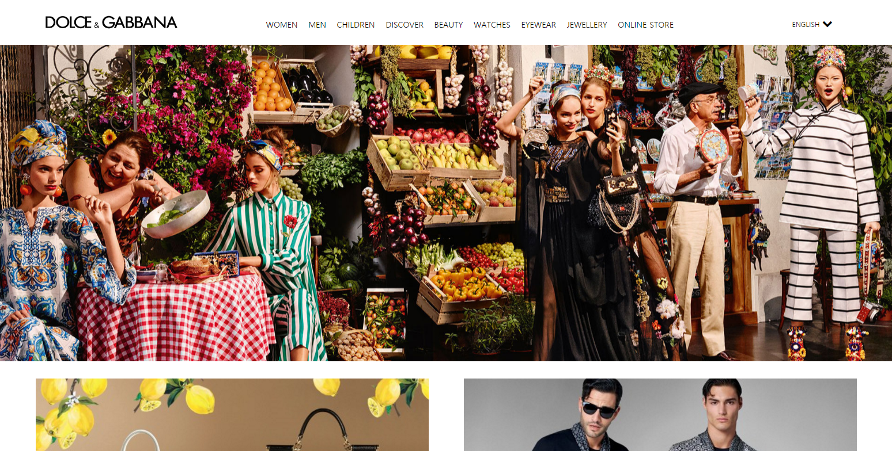
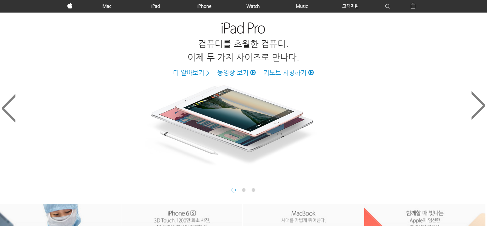
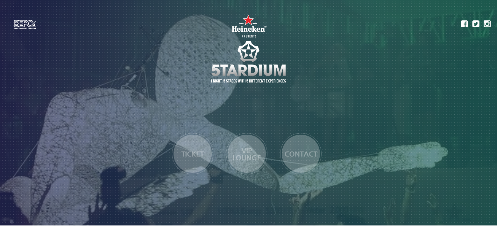

home
portfolio
about



돌체 앤 가바나 메인 페이지 하드코딩
소요 시간 : 4일
html,css,jquery 사용
웹표준 준수 , 반응형으로 제작
애플 메인 페이지 하드코딩
소요 시간 : 4일
html,css,jquery,javascript 사용
웹표준 준수 , 반응형으로 제작
하이네켄 5tardium 페이지 하드코딩
소요 시간 : 4일
html,css,javascript 사용
웹표준 준수 , 반응형으로 제작